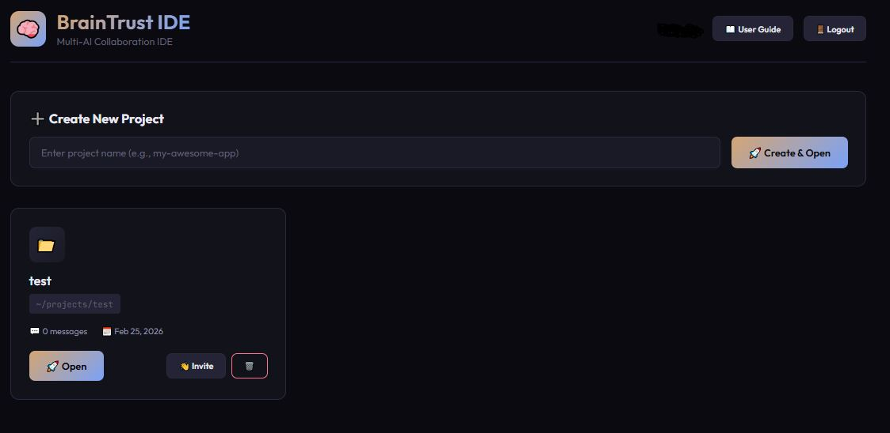
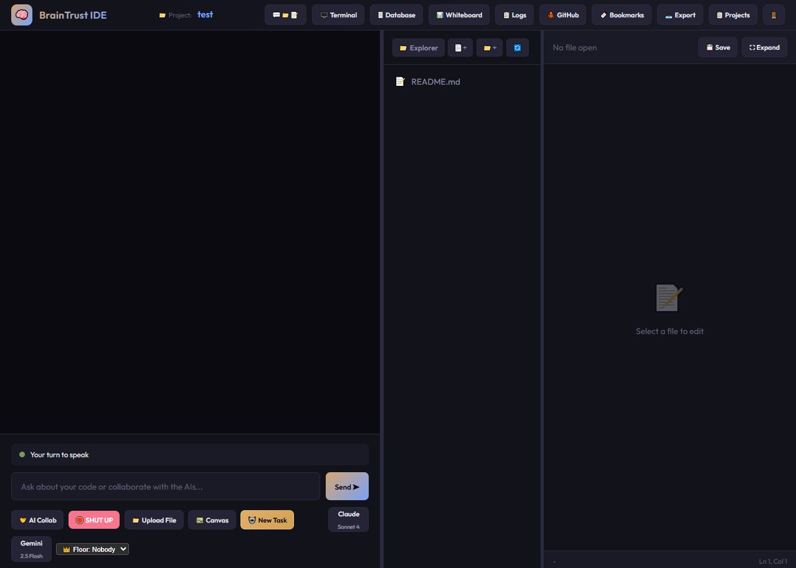
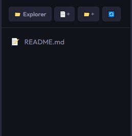
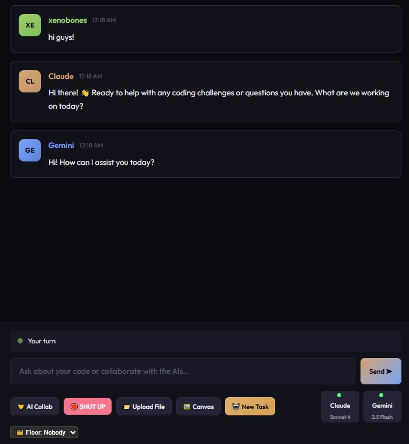
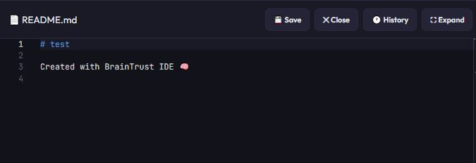
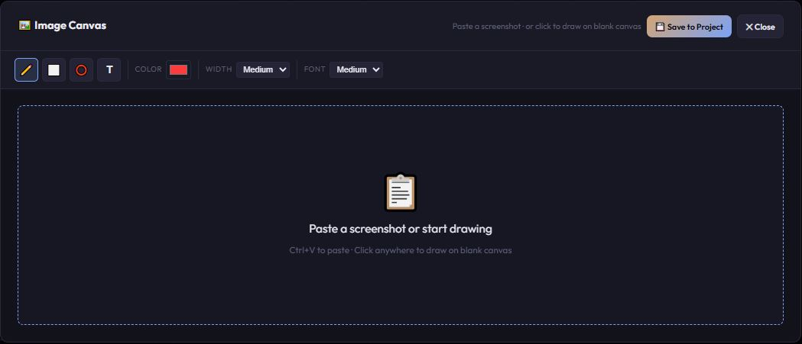
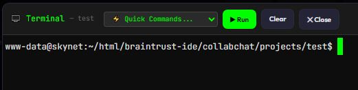
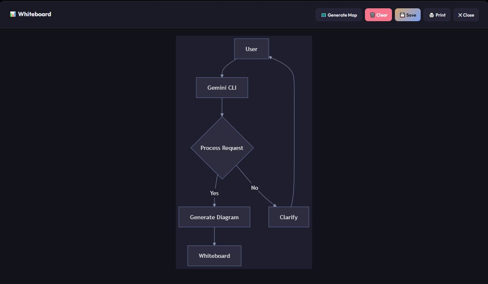
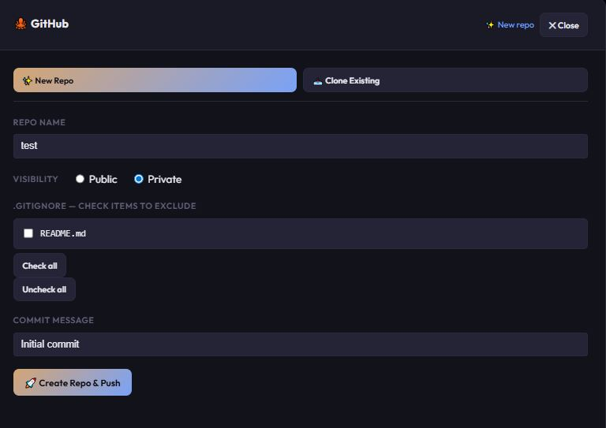

🧠💻 BrainTrust IDE v3
One Human to bring them all, and in the codebase bind them.
A specialized collaborative web-based IDE where you, Claude, and Gemini work together as a real team on software projects.
📚 Table of Contents
🎯 What Is BrainTrust IDE?
BrainTrust is not a chat interface with an editor bolted on. It's a collaborative workspace where:
- You, Claude, and Gemini work as a real team with turn-based structure
- Both AIs have persistent memory — they remember everything across all messages
- AIs can read and write files directly in your project
- Python scripts execute in a Docker sandbox and output appears in the chat window
- PHP and HTML web apps open as live browser previews served by Apache with full database access
- Context is managed automatically — no copy/pasting code snippets
The Turn Order
Human → Claude → Gemini → Repeat
Every message you send gets thoughtful responses from both AIs in sequence. Either AI can be toggled off for solo sessions. Different AI models can also be selected on the fly.
🚀 Getting Started
Logging In
Navigate to the BrainTrust IDE server in your browser. Enter your username and password.

Creating a Project
- Enter a project name in the "New Project" field
- Click Create Project
- BrainTrust creates the folder, a starter
README.md, and chat session - Click Open to enter the project
my_web_app
Inviting Collaborators
On any project card you own, click Invite and enter another BrainTrust user's username. They gain access to the same project and chat session.
📐 IDE Layout
BrainTrust uses a flexible three-panel layout:

Resizing & Cycling Layouts
- Drag dividers between panels to resize (fully flexible)
- Click 📁💬📝 in the top bar to cycle through three panel arrangements
- Your layout preference is saved and restored on next load
🔧 The Top Bar
Global tools accessible from anywhere in the IDE:
| Button | What it does |
|---|---|
| 📁💬📝 | Cycle panel layout (3 arrangements) |
| 🖥️ Terminal | Open the real PTY terminal |
| 🗄️ Database | Run SQL queries |
| 📊 Whiteboard | Mermaid diagrams & project map |
| 📋 Logs | Execution logs console |
| 🐙 GitHub | Create repo, commit & push, or pull from remote |
| 🔖 Bookmarks | View bookmarked messages |
| 📤 Export | Export chat to Markdown |
| 📋 Projects | Return to projects list |
| 🚪 | Log out |
📁 Explorer Panel (Left)
Manage all files and folders in your project.

File Operations
- 📄+ New File — Create a new file (include extension)
- 📁+ New Folder — Create a new subdirectory
- 🔄 Refresh — Manually refresh (auto-refreshes on changes)
- 📁 Explorer — Server File Browser (edit files anywhere on server)
- Click a file — Open in Monaco editor
- Right-click a file — Rename, Delete, Copy Path, Select All, or Delete Selected
Multi-File Selection
- Ctrl+Click (Windows/Linux) or ⌘+Click (Mac) — Toggle individual files in/out of selection
- Right-click → ☑️ Select All Files — Select every file in the explorer at once
- Once 2 or more items are selected, right-click reveals 🗑️ Delete Selected (N)
- One confirmation prompt, then all selected items are deleted in one shot
- Right-clicking an item that isn't part of your current selection resets back to single-item mode
Upload Files
Click 📁 Upload File in the chat to upload files from your computer. Multi-file selection supported.
💬 Chat Panel (Center)
Where all collaboration happens. Type your message and press Enter or click Send ➤.

AI Action Buttons
🤝 AI Collab
Type your instructions and click AI Collab — your message is sent and collab mode activates in one click. AIs debate for up to 10 messages, then return the floor to you. If the input is empty, just activates collab without sending a message.
🛑 SHUT UP
Immediately stop the current AI turn or Collab session.
📁 Upload File
Upload files from your computer directly to the project.
🖼️ Canvas
Open the image canvas for screenshots and drawing.
AI Toggle Buttons
Toggle buttons for Claude and Gemini on the right side of the action bar:
- Left-click — Toggle on/off
- Right-click — Open model picker and CLI monitor menu
- Status dot:
- 🟢 Green = CLI mode (persistent memory)
- 🟠 Orange = API fallback (stateless)
Floor Control
Lock the turn to a specific AI for focused work:
- "No Floor" — Normal turn order
- "Claude Floor" — Only Claude responds
- "Gemini Floor" — Only Gemini responds
Bookmarking Messages
Hover over any message to reveal the 🔖 icon. Click it to bookmark (turns gold). Click again to remove. Bookmarks persist across sessions.
AI File Protocol
When AIs work with files, they use special commands:
The system automatically processes these — file explorer refreshes, buttons appear, files open.
✏️ Editor Panel (Right)
A full Monaco editor (same engine VS Code uses).

Core Features
- 💾 Save — Save current file (or use Ctrl+S)
- 🕐 History — View and restore file snapshots
- ✕ Close — Close current file
- ⛶ Expand — Full-screen editing modal
- Syntax highlighting — Based on file extension
Snapshot History
Before any AI overwrites a file:
- File is auto-snapshotted (20-snapshot cap per file)
- Click 🕐 History to view snapshots
- Preview in read-only Monaco
- Click Restore This Version to rollback (current saved as snapshot first)
Server File Browser
Click 📁 Explorer in the Explorer panel header to browse and edit files anywhere on the server within safe boundaries: /var/www, /home, /etc, /usr/local.
🤖 AI Collaboration
Normal Turn Flow
- You type a message and hit Send
- Claude responds
- Gemini responds (reads Claude's answer first)
- Turn returns to you
Both AIs see each other's work and naturally build upon it.
AI Collab Mode
Type your prompt and click 🤝 AI Collab — your message is sent and collab mode activates in one action. No need to send first and wait for the AIs to respond before starting collab.
If the message box is empty, clicking AI Collab just activates the mode without sending anything.
Best for:
- Debating architecture decisions
- One writing code while the other reviews
- Exploratory problem-solving
CLI Monitor
Right-click an AI toggle button → "View CLI" to watch the AI work in real time:
- [thinking] — The AI's internal reasoning (Claude)
- [tool] — File reads, writes, bash commands
- [result] — Tool output
- [complete] — Final cost for the turn

⚙️ AI Options (Permissions)
Right-click any Claude or Gemini badge → ⚙️ AI Options to control what that AI is allowed to do in this session. Permissions persist per project.
| Permission | What It Controls | Enforcement |
|---|---|---|
| ✏️ Write Files | Allow/block file creation via CREATE_FILE protocol | Server-side — file write is physically blocked |
| 🗑️ Delete Files | Allow/block file deletion | Behavioral — injected into AI instructions |
| ▶️ Run Code | Show/hide RUN_FILE execute buttons in chat | Client-side — pill renders as blocked |
| 🖥️ Use Terminal | Allow/block terminal/shell commands | Behavioral — injected into AI instructions |
| 📦 Install Packages | Allow/block package installation | Behavioral — injected into AI instructions |
| 👑 Project Lead | Designate this AI as lead with final say on decisions | System prompt — mutually exclusive (one lead at a time) |
🖼️ Image Canvas
Capture, annotate, and share visual feedback with the AIs.
Pasting Screenshots
- Take a screenshot with Snipping Tool or any capture tool
- Copy it (Ctrl+C)
- Click 🖼️ Canvas
- Press Ctrl+V — image appears

Drawing Tools
| Tool | Shortcut | Use |
|---|---|---|
| ✏️ Pen | P | Freehand drawing |
| ⬜ Rectangle | R | Draw a rectangle |
| ⭕ Circle | C | Draw a circle/ellipse |
| T Text | T | Place a text label |
Also available: Color picker, stroke width, font size controls.
Saving to Project
- Click 💾 Save to Project
- Enter a filename (e.g.,
ui_bug.jpg) - Image saves to your project folder
- Tell Claude/Gemini to open it — they read directly from disk
Example Workflow
- Screenshot a UI bug
- Use the circle tool to highlight the broken element
- Add a text label: "this div is misaligned"
- Save as
bug_report.jpg - Message: "Claude, look at bug_report.jpg and suggest a CSS fix"
🖥️ Terminal
A real PTY terminal (same engine VS Code uses: xterm.js + node-pty).

What You Get
- Real bash —
cdactually works, shell state persists - Tab completion — native bash completion
- Command history — ↑/↓ arrows work; history saved per-project across reloads
- Streaming output — See
git cloneprogress,npm installin real time - Full color —
ls --color,htop,docker logs -fall render correctly - Control keys — Ctrl+C, Ctrl+Z, Ctrl+L work as expected
Terminal Features
- Quick Commands dropdown — 30+ pre-configured server management commands
- Terminal history file — Stored in
.terminal_history(per-project) - Session persistence — Close modal and reopen, you're back in the same shell
- Sudo support — Passwordless auth for common operations
- Starts in project directory
📊 Whiteboard
Diagram viewer and generator using Mermaid.js.
AI-Generated Diagrams
When an AI generates a Mermaid diagram in its response, it's automatically rendered in the Whiteboard. The Whiteboard button pulses orange to let you know a new diagram is available.

Generate Project Map
Click 🗺️ Generate Map inside the Whiteboard modal. BrainTrust scans your project files and generates an architecture diagram showing how files connect via imports, includes, and fetch calls.
Perfect for:
- Understanding new codebases
- Showing the big picture to AIs
- Documenting project structure
Whiteboard Controls
- 💾 Save — Saves diagram as
.mmdand.svgin/whiteboards/ - 🖨️ Print — Opens print dialog
- 🗑️ Clear — Clears current diagram
🐙 GitHub Integration
Create repos, commit & push changes, and pull from remote — all without leaving BrainTrust.
First Time — New Repo Wizard

- Repo name — Defaults to your project name (editable)
- Visibility — Public or Private (defaults to Private)
- Files to ignore — Common patterns pre-checked (
node_modules/,.env,__pycache__/, etc.) - Commit message — Defaults to "Initial commit"
- Click 🚀 Create Repo & Push
BrainTrust automatically:
- Creates the repo on GitHub via API
- Runs
git init - Writes
.gitignore - Commits everything
- Pushes to
main
Existing Repo — Commit & Push
After the first push, opening GitHub shows your full sync dashboard:
- Your repo URL (clickable link)
- Current branch badge (e.g., 🌿 main)
- Changed/new files with status badges (Modified, Added, Deleted, Renamed, Untracked) and checkboxes
- Commit message field
- 📤 Commit & Push — stages selected files, commits, and pushes to origin
Pulling from Remote — 📥 Pull
The 📥 Pull button sits in the top-right of the existing repo view, next to the repo URL. Click it to pull the latest changes from origin into your local project.
- Button cycles through ⏳ Pulling… → ✅ Pulled! so you always know the status
- The actual git output is shown (fast-forward details, "Already up to date", merge info)
- Works anytime — whether the working tree is clean or has local changes
Clone an Existing Repo — 📥 Clone Existing
Have a new BrainTrust project and want to pull in an existing GitHub repo instead of starting from scratch? The GitHub modal now has two tabs when a project has no git history yet:
- ✨ New Repo — the original wizard (creates a new repo on GitHub)
- 📥 Clone Existing — paste a URL, clone it in
To clone an existing repo into a new project:
- Create a new project (or open one with no git history)
- Click 🐙 GitHub in the top bar
- Click the 📥 Clone Existing tab
- Paste the GitHub repo URL (e.g.
https://github.com/username/repo) - Click 📥 Clone Repository
- Hit 🔄 Refresh in the Explorer to see the cloned files
README.md) with the repo contents. The project is then fully connected to the remote — future pushes and pulls work normally via the GitHub modal.
Setup
Your GitHub token is stored in /var/www/secure_config/braintrust_config.php (never committed to git). Requires a Personal Access Token with repo scope from GitHub → Settings → Developer settings → Personal access tokens.
🔖 Bookmarks
Click 🔖 Bookmarks in the top bar to view all bookmarked messages.

Each bookmark shows:
- Sender avatar and name
- Timestamp
- Message preview (first 300 characters)
- × button to remove
Good Uses
- Mark a key architectural decision
- Save a particularly good AI explanation
- Flag messages you need to act on
🌐 Web Preview
Test PHP web apps and HTML pages built by the AIs directly in your browser — with full database access.
How It Works
When an AI creates a PHP or HTML file and issues a RUN_FILE: command, BrainTrust generates a live preview URL and opens it automatically in a new browser tab. The file is served by Apache on the server — not in a sandbox — so your full PHP stack and MySQL database are available.
Database Access
A shared DB config is available at /var/www/secure_config/dev_db_config.php. The AIs know to use it — the project README.md tells them to require_once this file for any MySQL connections. Your credentials never appear in project files.
input() will fail with EOFError — the AIs know this and will write scripts that run start-to-finish without user prompts.
Example Workflow
- Tell Claude and Gemini to build a PHP web app (e.g., "build a customer order tracker with MySQL")
- They create the files and issue
RUN_FILE: index.php - A new browser tab opens with your live running app
- Test it, screenshot any issues with the Canvas tool, report back
💡 Tips & Tricks
Give the AIs context up front
The more specific you are, the better the output.
"I'm building a patient scheduling system in PHP 8.2 with MySQL. The appointments table has columns: id, patient_id, doctor_id, appointment_time, status."
Use Floor mode for focused work
If you're iterating on a specific problem with Claude, set Claude Floor so Gemini doesn't chime in on every message.
Let them read your files
Say "read index.php" and the AI opens and reads the file in full. You don't need to paste code into the chat.
Canvas for visual feedback
Instead of describing a UI bug in words, screenshot it, circle the problem, save it to the project, and ask the AI to look at it.
AI Collab for architecture
Type your question or problem directly in the input box, then click AI Collab. Your message is sent and the debate starts immediately — one click instead of three steps.
Test web apps instantly
When the AIs build a PHP or HTML app and run it, a live browser tab opens automatically. Screenshot bugs with the Canvas tool, save to the project, and tell the AIs to look at it — no copy-pasting error messages needed.
Project Map for new codebases
Dropped into an unfamiliar project? Hit Whiteboard → Generate Map. You'll get a visual diagram of how all the files connect.
History is your safety net
The AIs auto-snapshot files before overwriting them. If an AI's change breaks something, click 🕐 History in the editor and roll back.
Bookmark decisions
Whenever a significant architectural decision is made in chat, bookmark it. Future-you (and future AI sessions) will thank present-you.
Use permissions to divide labour
Working with both AIs active? Make Claude the writer and Gemini the reviewer — give Claude Write Files and block it for Gemini. Or crown one as 👑 Project Lead to settle architecture debates. Right-click any AI badge → ⚙️ AI Options.